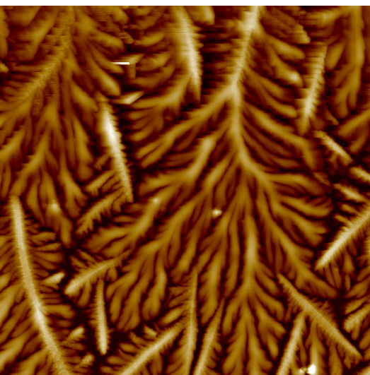
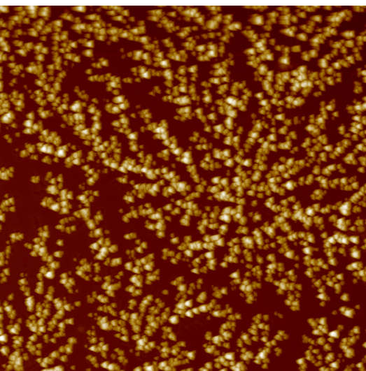
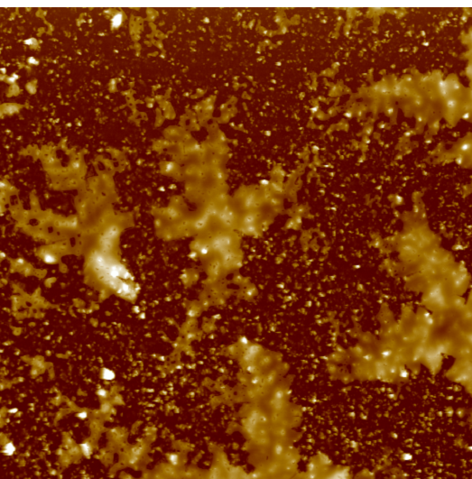
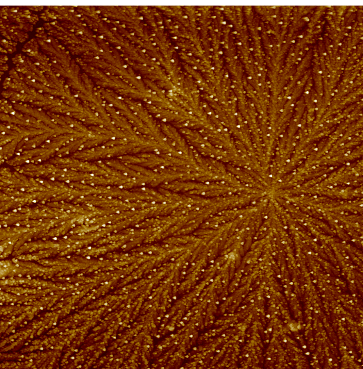
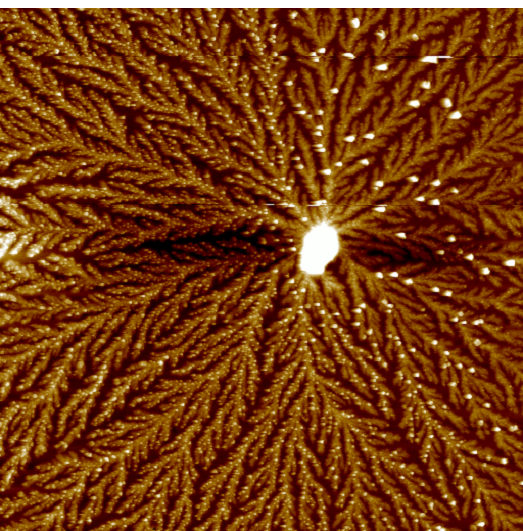
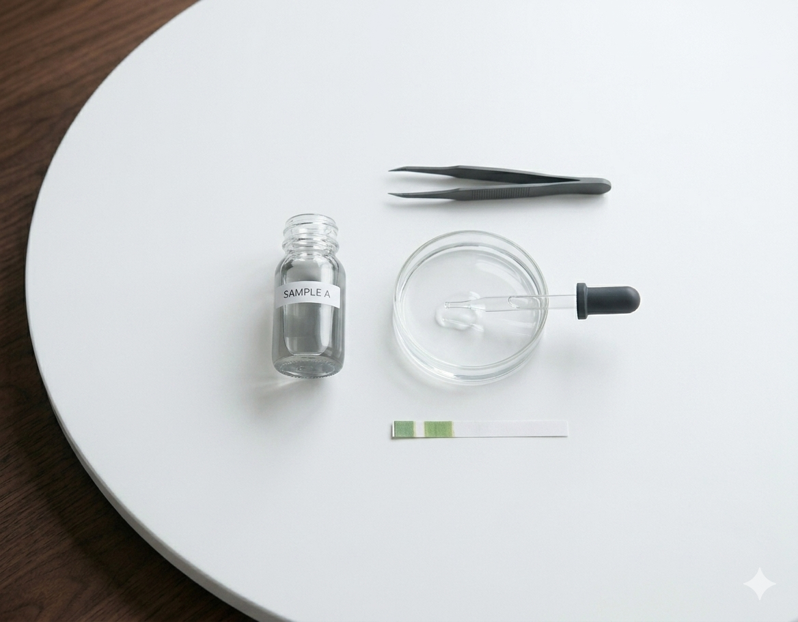
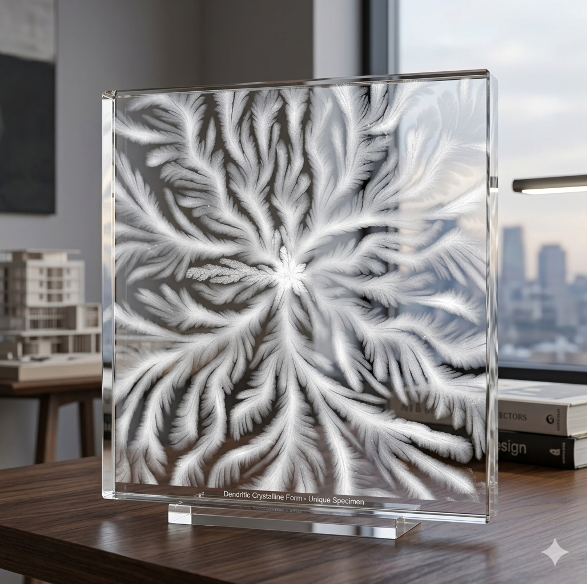
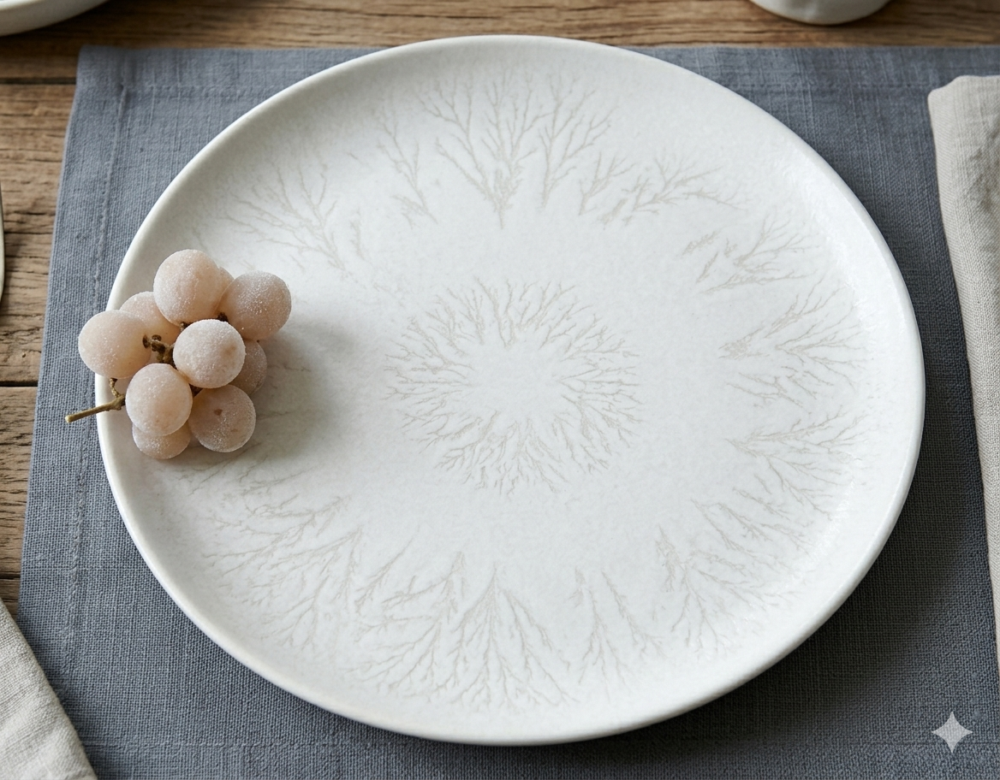
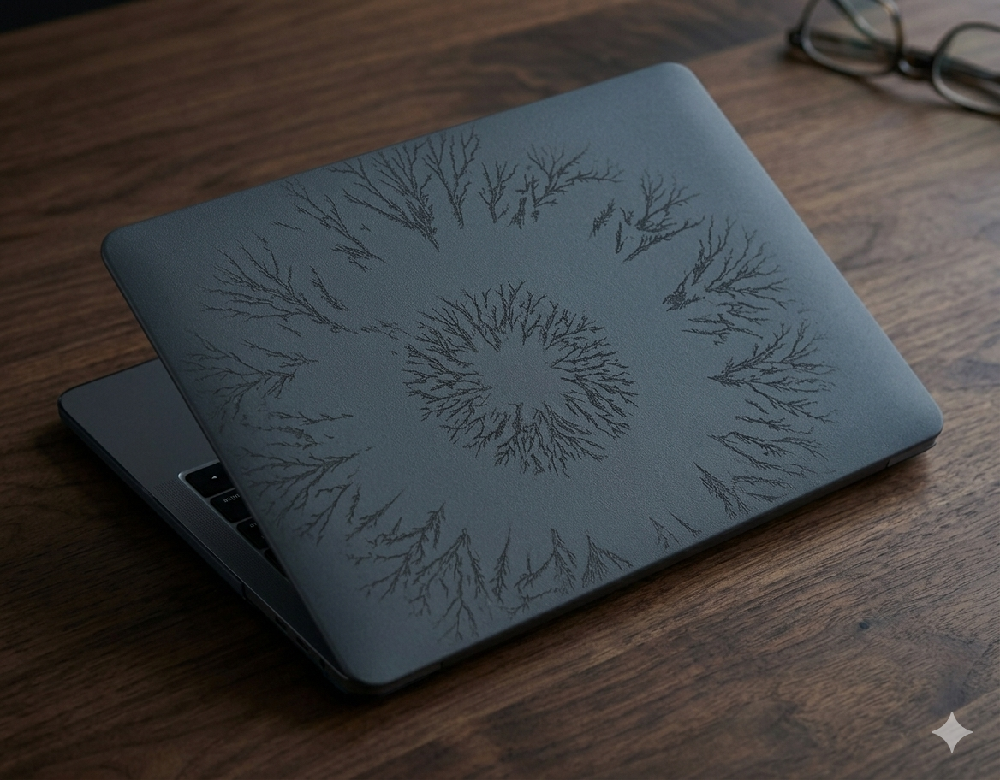
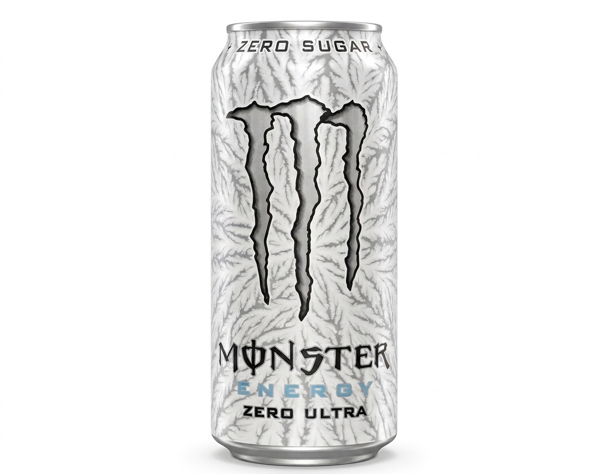

Our model reads dried-tear microscopy to distinguish five chronic diseases. The same scan can also become a porcelain-glass keepsake: a way to hold on to a tear of joy forever.
When a tear dries on glass, it forms branching crystal patterns. Those patterns change with the body's chemistry. Our model learns to distinguish five classes from a single AFM scan.

Even branching, soft radial symmetry, clean edges.

Dense dendritic cores, thickened primary branches.

Sparse fibrillar lines, broken secondary branching.

Disrupted symmetry, irregular crystalline islands.

Shortened ferns, coarse lipid aggregates, low coverage.
21M parameters, ImageNet-pretrained, fine-tuned at 384 × 384. AdamW with a cosine schedule, MixUp and CutMix, class-weighted loss for the 7:1 imbalance between MS and dry eye.
Patient-stratified 80/20 split — 189 scans from 33 patients for training, 51 scans from 9 unseen patients held out. No patient appears on both sides.
A fixed 523 × 531 crop removes the scale bar. Each scan is re-rendered through viridis, plasma, inferno, magma, cividis and grayscale to decouple color from topography.
Performance falls as the question gets finer. Sick-or-healthy is almost solved; naming one disease out of five is still hard. We report the honest numbers, not the flattering ones.
Healthy vs. disease. Clear margin, stable across folds.
Healthy · autoimmune · metabolic. The useful clinical split.
Full diagnosis from a single tear. Where the frontier is.
All numbers are f1-macro on a patient-stratified split — no patient appears on both sides of training and evaluation. One drop, one story, one honest score.

Cry at home, mail the sample, get your memory imprint back. The tear survives the journey — we checked.
Scientists at UPJŠ confirmed the tear's crystalline signature holds between collection and the microscope.
The dried drop tolerates ambient shipping without losing the dendritic structure the model needs to read it.
One vial, one petri dish, one dropper, one pH strip. The rest happens in the lab and on the substrate you keep.
Every dendrite is shaped by your biology, your mood, your moment. What started as scientific data also became a visual archive of shapes that feel like ferns, rivers, and constellations.
Once a tear becomes a pattern, it can become an object.

One scan, laser-etched into a polished tile of optical crystal, about the size of a small book. Part keepsake, part portrait, meant to last.

A 10-inch dinner plate, dendritic tear motif applied under a clear glaze. Oven, dishwasher, and years of Sunday lunches safe.

Your tear, laser-engraved into a matte aluminium shell that fits your laptop. The pattern only reveals itself when the light catches the bevel.

Printed with the tear our ML team cried at 4am. One crate only, Hack Košice 2026. It is, and is not, a real product — a fair question what this says about the studio, which we refuse to answer.